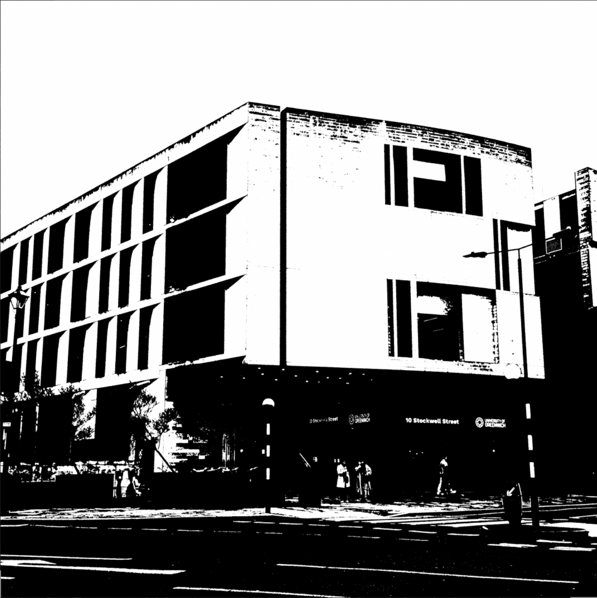
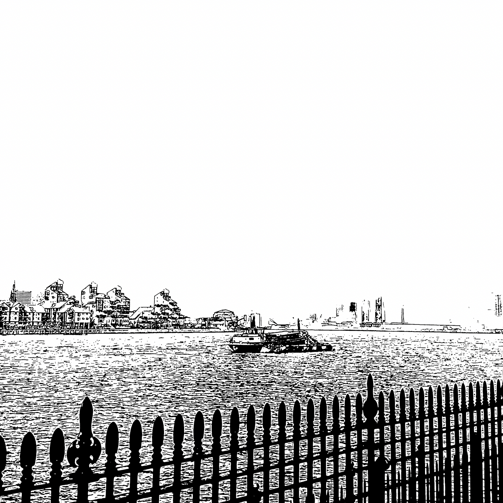
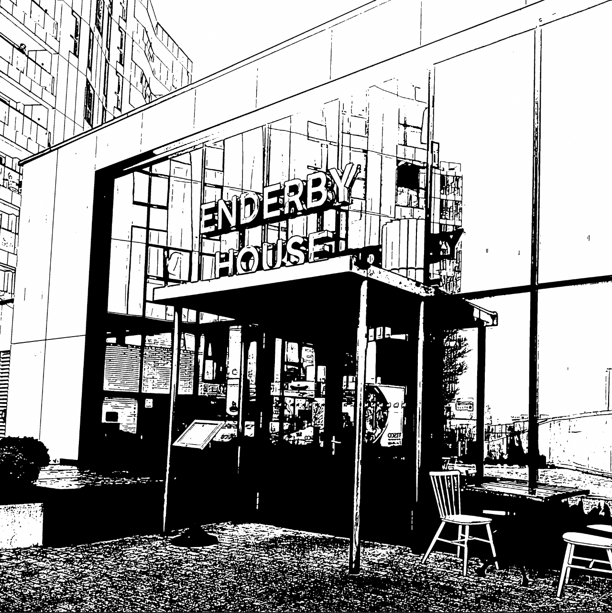

A creative website exploring accessibility, sensory awareness and digital storytelling through interactive design.



To create this website I used HTML visual coding to design a platform that is neurodivergent friendly and accessible to a wide range of users. I combined illustration with photography through layered overlays to create hidden locations within the site, inspired by the structure of video games where areas, clues, or objects are gradually revealed as the player progresses. This interactive approach encourages exploration while also creating a sense of discovery and curiosity for the user.
I later experimented with colour filters by applying selected tones over the images. Some filters are very subtle, using only small hints of saturation, while others are much bolder and more expressive. This variation was intentional, as colour can strongly affect atmosphere and emotional response. The changing intensity of the colours also reflects the idea that sensory experiences differ from person to person, especially for neurodivergent individuals.
The overall website design remains mostly black with white text. I chose this because many neurodivergent users (including myself) often prefer darker interfaces, as they can reduce visual overstimulation and eye strain. Keeping the layout simple and uncluttered was an important design decision. I avoided large blocks of text and instead used short, factual writing to make the content easier to process and less overwhelming to read.
Another important feature was the inclusion of sensory information for each location, such as descriptions of sounds, smells and atmosphere. This allows users to know what to expect before engaging with a space, helping reduce anxiety linked to unpredictability or sensory overload. Some neurodivergent people find unexpected sensory experiences uncomfortable, so providing this information creates a more inclusive and supportive experience. I also designed the site to allow users to scroll through the content at their own pace, giving them more control over how they interact with the website.
During this project helped me explore how digital design can become more empathetic and accessible. Rather than focusing only on aesthetics, I considered how colour, layout, interaction, and sensory awareness could shape the emotional comfort of the user. The website combines an element of gaming, storytelling and accessibility to create an experience that feels both immersive and considerate of neurodivergent needs.